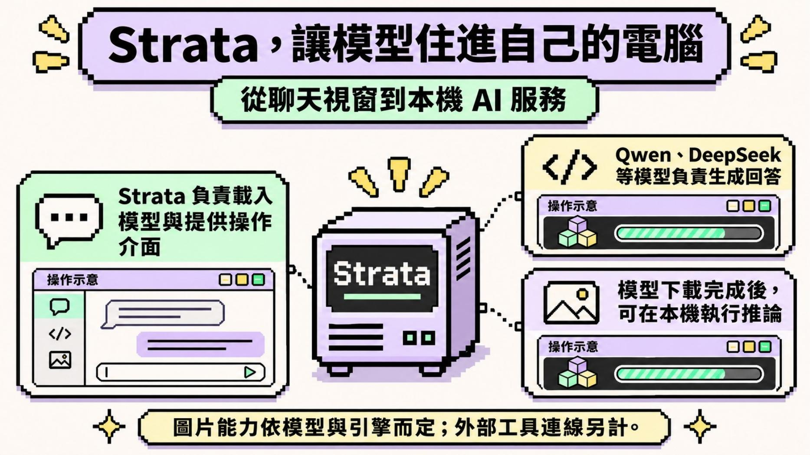
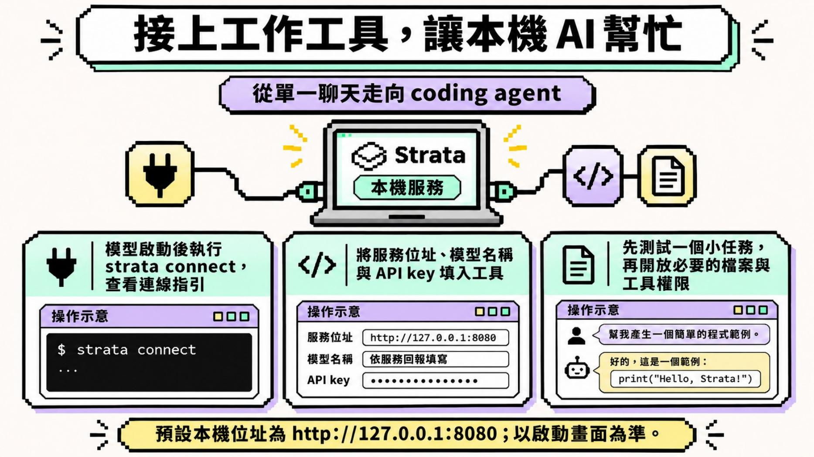
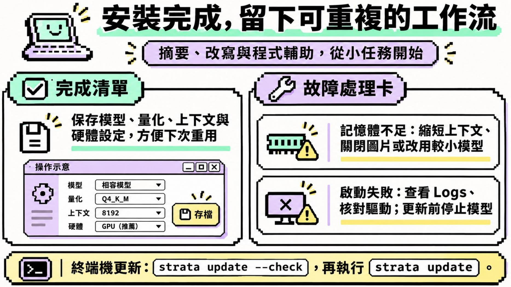

0. 課程資訊與教材
| 課程名稱 | EP59 Strata 地端 AI 實戰：在自己電腦跑大模型，串接 AI Agent |
|---|---|
| 日期 | 2026/11/07（依簡報檔案建立時間；錄影未口述日期） |
| 錄影長度 | 20 分 5 秒 |
| 教材 | 1 支錄影＋11 頁簡報 |
| 本堂主題 | 硬體盤點、Strata 安裝、模型選擇、本機服務、工作工具串接與故障處理 |
| 要先準備 | Windows 或 Linux 電腦、足夠的 SSD 空間；建議先確認 GPU、VRAM、RAM 與顯卡驅動 |
📁 課程資料夾（Google Drive）
原始錄影與完整簡報保留在課程資料夾，本頁只公開整理後筆記與四張必要、無身分資訊的簡報畫面。
🔗 開啟「EP59 Strata 地端 AI 實戰」課程資料夾 ›
| 教材檔案 | 在本頁的用途 |
|---|---|
EP59_Strata…mp4 | 核對課堂實際操作順序、現場遇到的相容性問題與老師原話。 |
簡報_EP59_Strata…pptx | 補上硬體盤點、安裝路線、終端機指令、Agent 串接與故障處理的完整脈絡。 |
帶走一份正式手冊
1. 一張圖看懂這堂
這堂課的主線不是「下載一個模型」，而是把硬體、模型、本機服務與工作工具串成一條可以重複使用的路。
2. Strata 是執行環境，不是另一個模型
老師一開始先拆開「模型」和「讓模型運作的環境」。Strata 的角色，是載入相容模型、提供聊天介面與本機服務，再讓其他工具連進來。

| 層次 | 它負責什麼 | 這堂提醒的限制 |
|---|---|---|
| 模型 | 理解提示、產生文字，部分模型可看圖或處理更多媒體。 | 能力、授權、來源與硬體需求各不相同。 |
| Strata | 協助載入模型、建立操作介面與本機連線服務。 | 支援範圍依版本、引擎與模型格式而變。 |
| AI Agent／工作工具 | 透過服務位址和模型名稱，把本機模型用在程式、檔案或自動化任務。 | 仍要控制檔案、工具與系統權限。 |
3. 先問硬體跑不跑得動，再談模型大小
老師示範 CanIRun.ai，讓學員先用 GPU、VRAM、RAM 與硬碟條件估算可用模型，再回 Strata 核對支援狀態。
硬體判讀，不是只看一個數字
| 項目 | 影響 | 不夠時先怎麼做 |
|---|---|---|
| GPU／VRAM | 決定模型能否主要在顯卡上推論，以及速度上限。 | 改用較小模型或較低量化，必要時降低圖片能力。 |
| RAM | 影響模型載入、上下文與系統同時運作的餘裕。 | 縮短上下文，關閉其他程式，先維持單一請求。 |
| SSD | 模型檔、引擎與快取會佔用大量空間。 | 先規劃儲存位置；不要用「下載大小」直接推論記憶體用量。 |
| 任務類型 | 文字、圖片、影音與長上下文需要的資源不同。 | 先定義最小任務，再選模型，不用一開始就追求全能。 |
4. 安裝只是起點，模型相容性才決定能不能用
課堂先提到從 GitHub 取得 Strata，也示範讓 AI 助理按官方說明協助安裝。簡報則把桌面版、終端機與 Docker 分成三條路。
依使用習慣選安裝路線
| 路線 | 適合誰 | 先注意 |
|---|---|---|
| 桌面版 | 想用視窗完成模型選擇與聊天的初學者。 | 下載對應作業系統的安裝檔，確認偵測到顯卡。 |
| 終端機 | 需要狀態檢查、停止服務或串接工具的人。 | 完成官方 Terminal 安裝後，才使用 strata launch。 |
| Docker | 已熟悉容器與網路設定的進階使用者。 | 依官方文件操作，不把課堂示意當成每個版本都適用的固定指令。 |
這三個指令來自簡報第 9 頁，分別用來逐步啟動、查看狀態與停止模型。簡報也示範用 --plan 先看下載規劃；實際參數要以目前版本的官方說明為準。
第一次啟動，先求穩定
- 先更新顯卡驅動，確認 SSD 有足夠空間。
- 用硬體條件篩出相容模型與量化版本，不直接選最大的。
- 上下文先設小一點，單人使用先維持一個請求。
- 下載完成後，用一小段自己有權使用的文字測試繁中摘要。
- 確認內容有依據、等待時間可接受，再增加圖片或其他能力。
5. 地端不等於可以放進任何資料
老師談到機敏資料時，特別提醒公家與教育單位仍要遵循各自的規範。資料留在電腦裡，只解決了傳輸位置的一部分問題。
| 常見誤解 | 課堂筆記應補上的判斷 |
|---|---|
| 「沒有上雲，所以什麼資料都能放。」 | 仍要確認機關規範、資料分級、用途限制、保存位置與人員權限。 |
| 「模型在本機，所以完全不會連網。」 | 下載、更新、外部搜尋、Agent 工具與遙測可能連網；要逐項查設定。 |
| 「模型免費，所以沒有成本。」 | 硬體、電力、等待時間、維護與故障處理都是真實成本。 |
| 「開了資料夾權限，Agent 就能自動做好。」 | 先只開最小必要權限，測試小任務，再逐步擴大。 |
錄影在 09:20–09:59 回到 Strata 介面，老師說明本機模型可以像一般聊天工具一樣使用，也可以安排 Agent 任務。這個便利性反而更需要把「模型權限」和「工具權限」分開管理。
6. 現場卡住的地方，正是實作課最有用的部分
下載等待、引擎不支援、模型供應商設定與 Model ID 都在現場遇到。錄影沒有剪成一條假裝一次成功的流程，而是留下除錯的真實順序。
把卡住處翻成可重複的除錯步驟
- 確認下載是否完成：模型檔沒有就緒，介面能打開也不能推論。
- 核對引擎支援：錯誤畫面顯示 model type 不被支援時，先查目前引擎與模型格式。
- 選對供應商：要接自訂本機模型時，選自訂或本機設定，不把外部服務欄位硬套進去。
- 依服務回報填 Model ID：不要從檔名猜模型名稱。
- 保留 Logs：啟動失敗時，把錯誤訊息交給協助安裝的人或 AI 助理，比只說「不能用」有效。
| 現場現象 | 不要急著下的結論 | 下一步 |
|---|---|---|
| 下載很久 | 不是模型一定壞掉。 | 查看檔案大小、網路與磁碟空間。 |
| 模型類型不支援 | 不是整臺電腦都不能跑地端模型。 | 換相容格式／量化或更新引擎。 |
| 服務逾時 | 不是 Agent 完全不能用。 | 改用小模型、小任務與較短上下文。 |
| 介面要求服務位址或模型名 | 不要填入真實 API 金鑰做試錯。 | 依本機服務的連線指引填寫。 |
7. 接上 Agent 後，算力、速度與權限要一起管理
後段把地端模型接回工作工具，並實際看到速度慢與逾時。地端不是雲端模型的無限免費版，而是一種不同的取捨。

strata connect 查看連線指引，再把服務位址與模型名稱填入工作工具。示意圖中的 API key 是遮罩占位，不是真實金鑰；正式使用時只依服務需求提供必要憑證。［17:00–17:55；簡報第 10 頁］從單一聊天走向 Agent，照這個順序
- 確認模型能在 Strata 裡完成一個小型文字任務。
- 啟動本機服務，取得實際服務位址與模型名稱。
- 在工作工具裡新增自訂模型供應商。
- 先測一個不含敏感資料的小任務，例如產生簡單程式範例。
- 確認速度、穩定性與回應品質，再開放必要的資料夾或工具權限。

8. 這堂課真正在教的事
一、先定義任務，再挑模型
文字摘要、圖片理解、影音處理和 coding agent 的資源需求不同。先從一個可驗收的小任務開始，模型才有合理的選擇標準。
二、相容性比「最大、最新」更重要
能下載不等於能載入，能載入不等於穩定。模型格式、量化、引擎、驅動與硬體要一起看。
三、地端只是資料治理的一個技術條件
資料未上雲，不代表自動符合組織規範；來源、用途、存取權、Logs 與工具連線仍要管理。
四、現場卡住要留下可查的證據
把下載狀態、錯誤訊息、Logs、設定和 Model ID 保存下來，下一次才能重複，也能請人有效協助。
五、Agent 先給最小權限
先測不含敏感資料的小任務，再逐步開放資料夾和工具；不要因為模型在本機，就一次交出整臺電腦的權限。
9. 老師金句
10. 資料來源與整理說明
| 來源 | EP59 課堂錄影 1 支（20:05）與同課程簡報 11 頁。 |
|---|---|
| 整理方式 | 全程本機處理；場景偵測保留 28 張關鍵畫面，產生 210 段逐字稿，再把錄影操作與簡報內容合讀成正式筆記。公開頁精選 4 張簡報畫面。 |
| 時間戳 | ［mm:ss］對應錄影播放器時間；簡報補充另標頁碼，不冒充錄影當下已完成的操作。 |
| 整理 | 竹貞（Tarshar 的逐幀筆記專員） |
已知限制，請先看過再引用
- 逐字稿是機器產生的，人名與工具名可能聽錯；正式頁只保留能由畫面、簡報或上下文佐證的用語。
- 片頭與片尾靜音曾產生無關的辨識幻覺，已從 raw 逐字稿與正式頁移除。
- 錄影中 Strata 安裝、模型下載與自訂模型串接沒有全部一次成功；本頁照實保留，沒有把示範改寫成全數完成。
- 簡報的指令、位址與設定是課程當時版本；實作前要再核對官方專案與目前版本。
- 課堂對公家或教育單位的資料規範屬風險提醒，不是最新法規或各單位內規的完整說明。
- 公開畫面未使用原始桌面錄影截圖；簡報頁已逐張檢查，無帳號、分頁、書籤、真實 API 金鑰與個資。
- 教材與課堂畫面版權屬原作者。若原作者或課程方希望撤下，請透過聯絡頁告知，將即刻移除。